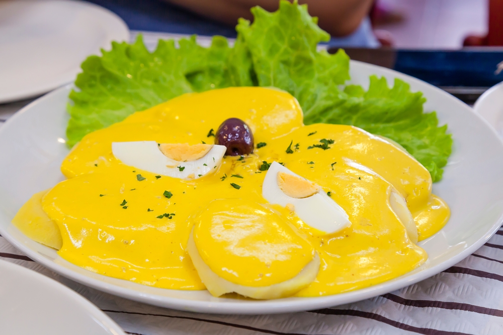
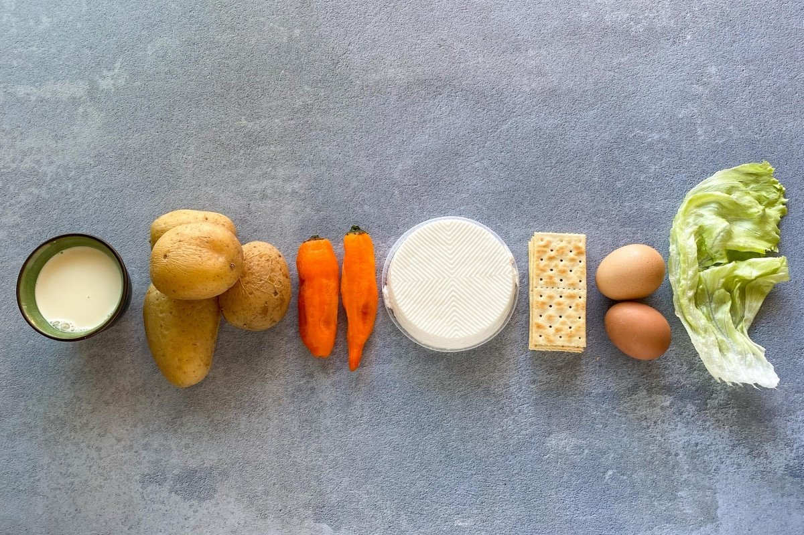
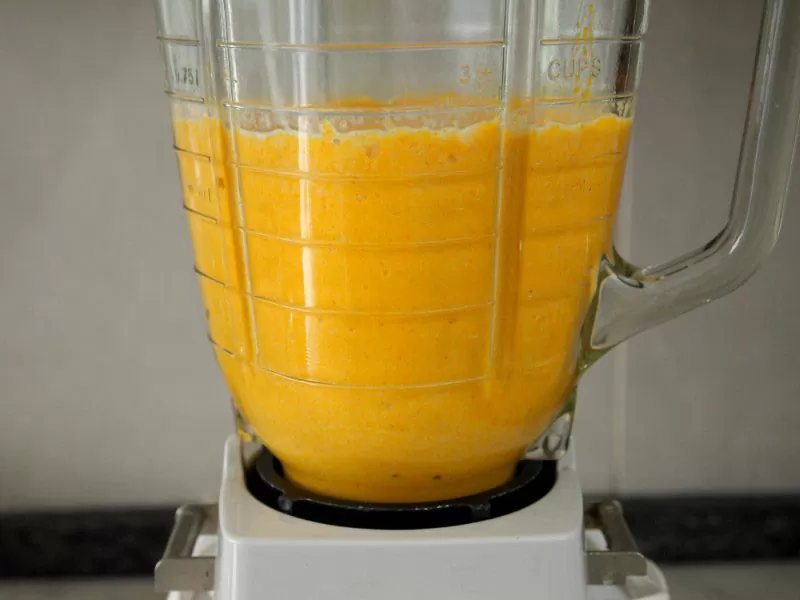
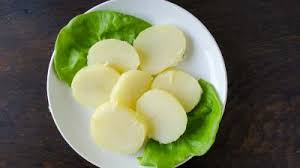
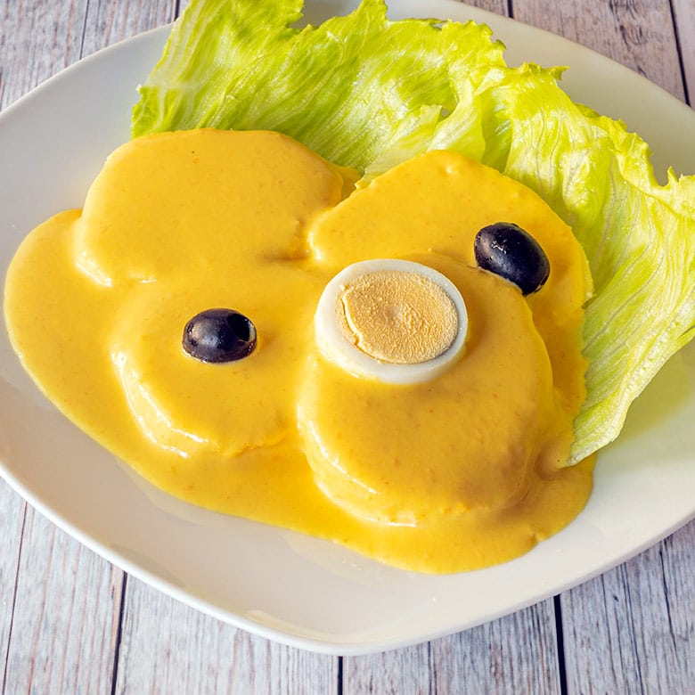

Sabor Criollo
Sabores peruanos que conquistan el corazón
Sabores peruanos que conquistan el corazón

La papa a la huancaína es una entrada emblemática del Perú. Su irresistible salsa cremosa preparada con ají amarillo, queso fresco y leche es la combinación perfecta con papas cocidas y acompañamientos frescos. Un clásico que nunca falla.




Descubre cómo preparar una auténtica papa a la huancaína con esta receta tradicional.